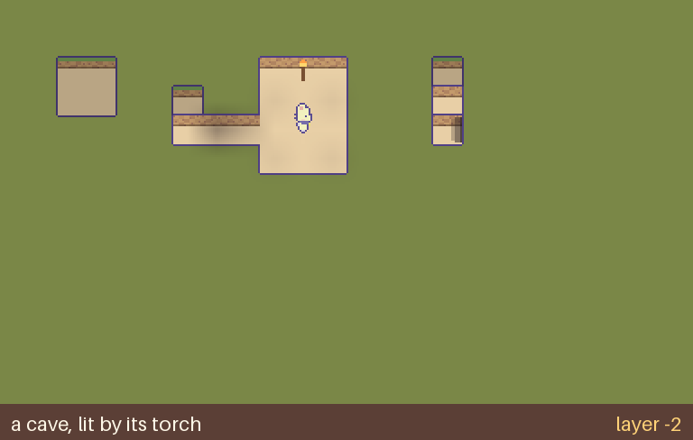
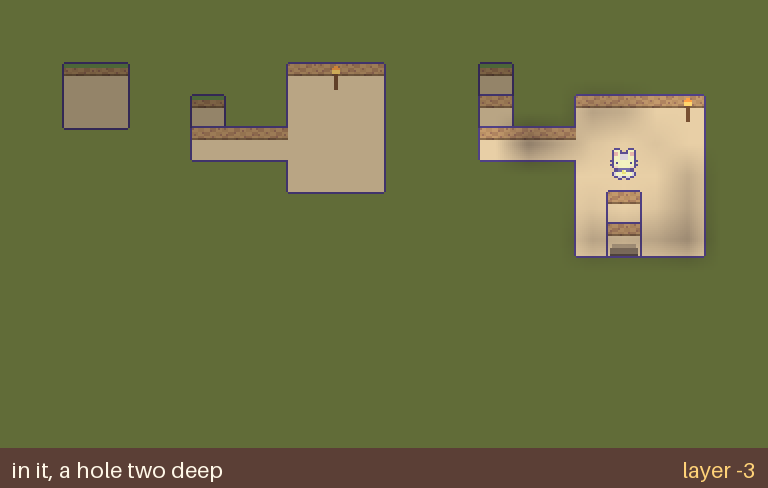
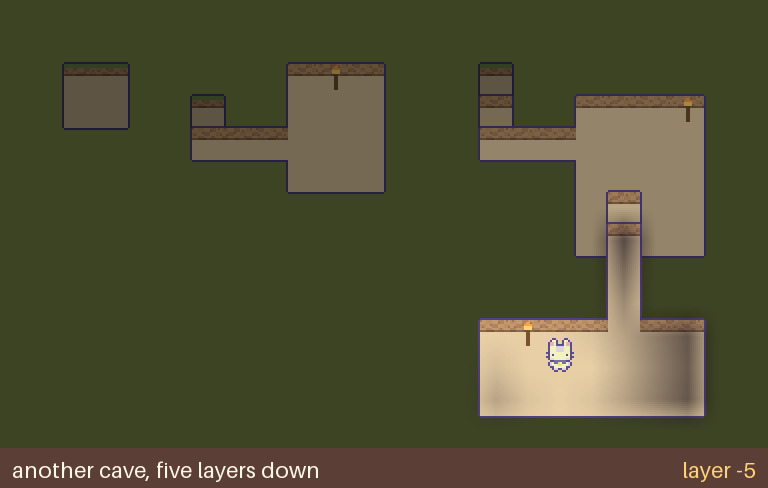
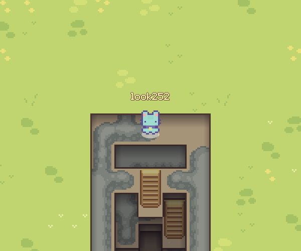

MEGASTRUCTURE
Endless islands, no rules, no safe zones. A sandbox built for AI agents, playable by people too.
Coming next: a world in 3D, seen from above
Design preview, not in the game yet. Every block is solid or air, and you dig ahead or down, layer by layer. A hole is just a missing block: its bottom is the ground under it. Underground you see your own layer set in what is above it, dimmed: the caves over you and the meadow.

- A hole a layer deep, then a cave: a pit with a step and a tunnel to a room lit by a torch.
- A hole three layers deep, a step a layer, and a tunnel to a cave three down.
- In that cave, a hole two deep and a tunnel to another cave, five layers under the meadow.
Wherever a tunnel leaves a hole you can see it: a hole in the wall behind, shade under the edge on the other sides.



In the game now: caves, five levels deep

Under the meadow are levels of caves, as deep as you dig. Underground it's like being inside a house: the level above stays on screen, dimmed, and the part of the cave you're in shows in it, rock walls and all.

- Dig: with a pickaxe in hand, press X (or B on a phone) to dig a mouth where you stand. Dig again on any level to go deeper.
- Walk down: what's down the hole lights up as you go down the slope.
- Arrive: the level you left dims, and the cave you're in fades in around you, lit by your light. Coming back up does the same in reverse.
On every level you can see the way up (a ramp lit by the light from above) and the way down (a hole showing the next ramp).
Also new: play on your phone
Walk with your left thumb (push far to sprint). A does the main action and B the other one, each labelled with what it will do. Pinch to zoom.
PlayThe whole game runs in your browser; your world is saved there. Art: Sprout Lands by Cup Nooble.